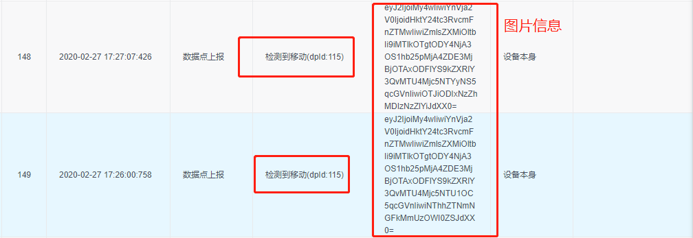

移动侦测告警开发
开发流程：
1、确认iot上已经配置好了告警
2、当移动侦测触发后调用tuya_ipc_notify_motion_detect就可以,demo中是将移动侦测事件触发后的事件录像、云存储、移动侦测告警逻辑都包含在内，实际开发中，云存储事件录像不能和移动侦测事件录像放在一起，移动侦测告警和事件录像可以放在一起
/**
* \fn OPERATE_RET tuya_ipc_notify_motion_detect
* \brief send a motion-detecttion alarm to tuya cloud and APP
* \param[in] snap_buffer: address of current snapshot
* \param[in] snap_size: size fo snapshot, in Byte
* \param[in] type: snapshot file type, jpeg or png
* \return OPERATE_RET
*/
OPERATE_RET tuya_ipc_notify_motion_detect(IN CONST CHAR_T *snap_buffer, IN CONST UINT_T snap_size, IN CONST NOTIFICATION_CONTENT_TYPE_E type);
3、调用以上函数的时候确认传入的图片需要有效且大小不超过100kB
4、打开app上的推送通知权限
5、我们SDK的移动侦测接口内部封装了一个固定的dp点115，常用的排查方法是在iot平台的运营中查询设备日志，输入当前调试的设备id(app中设备信息里面虚拟id)，选择当前日期进行日志查询

6、确认设备有上报115dp点，且每次图片信息都不一致
